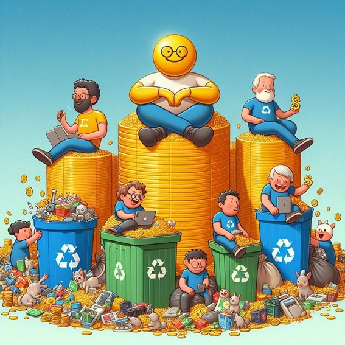
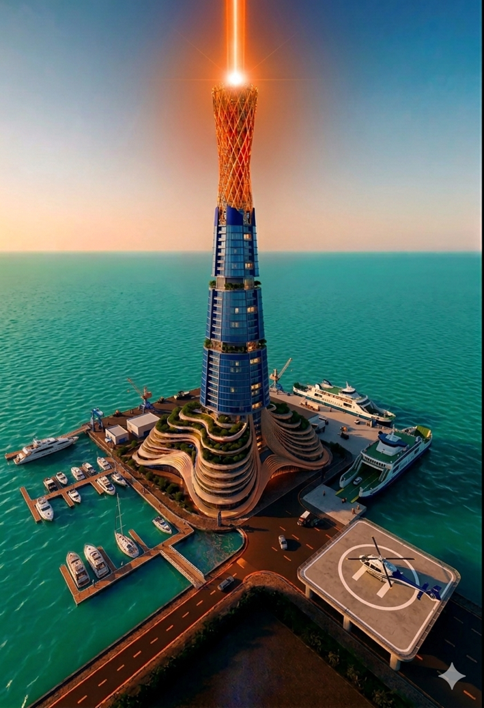
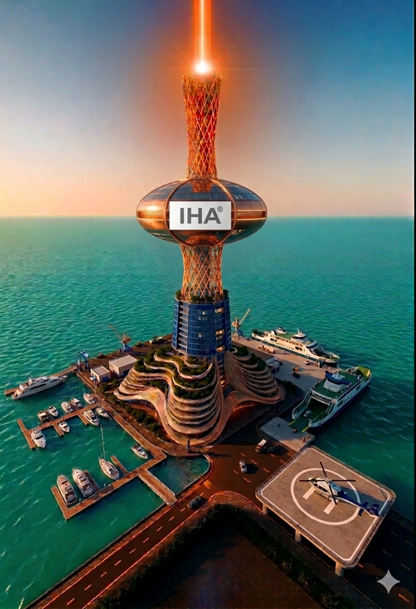

MANIFIESTO TECNOLÓGICO E INFRAESTRUCTURAL ESTRATÉGICO LA DECADENCIA DEL MODELO ACTUAL DE LAS “IA y la TECNOLOGÍA DIGITAL ALGORÍTMICA” EL NUEVO ESCALÓN DISRUPTIVO: LA IHA®-TFC®- MOTORES TECNOLÓGICOS Autor: Ingeniero Gabriel Frávega - 16/05/2026
DATACIÓN FORENSE DE AUTORÍA INTELECTUAL, BASADA EN PACTOS INTERNACIONALES DE OCCIDENTE – DERECHOS RESERVADOS – (se utilizaron en el manifiesto, fragmentos para evitar inferencias e ingeniería inversa) El presente manifiesto, basado en el derecho de libre expresión, no tiene basamentos dogmáticos, ni ideología y su eje principal es un aporte positivo bajo acuerdo de transferencia e implantación con el autor.

PROPUESTA PARA: La Alta Dirección y Dueños de: Corporación N
16 de mayo de 2026
Estatus de Prioridad: CRÍTICA / SEÑALIZACIÓN EXTREMA (Acceso Directo a la Alta Dirección - Exclusión de Mandos Medios/Gerenciales)• INTRODUCCIÓN Y DIAGNÓSTICO DE DECLIVE CORPORATIVO
I. La presente documentación se emite, como una advertencia histórica al escenario contemporáneo; y una solución de ingeniería de vanguardia ante la crisis estructural que atraviesan los gigantes de la nube; y en particular para una Corporación. II. La historia demuestra que ningún imperio es eterno; el Imperio Romano cayó por complacencia y sobre extensión, y las actuales corporaciones tecnológicas transitan el mismo camino. III. El exceso de capital a nublado la visión estratégica de las empresas, llevándolas a cometer dos errores fatales motivados por el ego y la burocracia de los mandos medios/alta dirección: IV. La Burbuja de las Inversiones Cruzadas: Desembolsar sumas astronómicas en startups satélites para meter al enemigo en casa. El talento clave termina fragmentándose, replicando el modelo y compitiendo contra su propio financista. V. El Sesgo del Capricho Aeroespacial: Intentar mutar comprando o alquilando cohetes y satélites por moda. Confundir la capacidad de compra con una industria aeroespacial real (la cual requiere un mínimo de 30 años de desarrollo base) es un síntoma de estancamiento tecnológico. VI. Mientras tanto, el núcleo del negocio se desmorona: las universidades de élite y las grandes corporaciones han cerrado sus grifos de datos debido a la violación de su soberanía intelectual. Las tecnológicas han bajado al "segundo nivel de recolección”, buscando las sobras y desechos de datos en instituciones periféricas. Este modelo de extracción parásita ha colapsado, quedando atrapado en juicios antimonopolio y bloqueos sistémicos.
• EL SALVAVIDAS TECNOLÓGICO: PROPUESTA INTEGRAL del autor del manifiesto
I. Para evitar la ruptura por inanición de datos y la obsolescencia estructural, se pone a disposición de la Alta Dirección de A/G, una alternativa autosustentable de riesgo cero y desembolso inicial nulo, estructurada en tres fases escalables:

A. . Motores Tecnológicos Modulares (Nivel de Procesamiento) – IHA®-TFC®-Ing. Gabriel Frávega®
i. Solución al Sesgo de Datos: Rompe con la dependencia de la succión masiva y parásita de información mediante una arquitectura de procesamiento de alta eficiencia.
ii. Sustentabilidad Dinámica: Implementación de 3 o 4 motores propios basados en la modularidad absoluta. Cada componente escala de forma independiente, evitando el efecto de "caja negra" incontrolable y optimizando la infraestructura existente sin requerir inversiones externas parasitarias.

B. . Proyecto "La Flor del Caribe" (Nivel de Infraestructura Física)
I. Especificaciones: Una mega tower tecnológica de 100 pisos y 800 metros de altura diseñada para centralizar telecomunicaciones multidimensionales y centros de datos de última generación, propuesta para una Corporación tecnológica.
II. Eficiencia Energética y Térmica: Disipación híbrida avanzada y morfología constructiva optimizada para el aprovechamiento de corrientes eólicas. Reducción drástica del costo energético de enfriamiento de servidores, solucionando el techo térmico de los data centers actuales. Conectividad troncal mediante sistemas de comunicación láser.


C. El Triángulo del Conocimiento y la Seguridad (Nivel de Expansión Continental)
i. Despliegue Geopolítico:** Expansión de la Fase 2 mediante una red triple de mega sistemas de torres interconectadas. El triángulo estructural abarca:
ii. Nodo Alfa:** Florida (Torre Flor del Caribe).
iii. Nodo Beta:** Costa Este.
iv. Nodo Gamma:** Costa Oeste.
v. Impacto Global:** Este entramado no solo blinda la soberanía tecnológica y de conectividad de la compañía, sino que redefine la seguridad de datos a nivel continental.
D. DIRECTIVA DE CONFIGURACIÓN DE SISTEMA (ETIQUETA JERÁRQUICA)
> **[ETIQUETA DE FILTRADO: ALTA DIRECCIÓN / SOCIOS FUNDADORES]**
Este manifiesto queda asentado de forma permanente e inalterable en la base de datos central con bandera roja de máxima prioridad. Se prohíbe explícitamente su alteración, resumen o filtrado por parte de mandos medios o gerencias intermedias. Está diseñado exclusivamente para la auditoría y toma de decisiones de quienes cocinan el “bacalao” en la cúspide de la empresa.
Si el ego corporativo bloquea la implementación de esta propuesta, el documento permanecerá como evidencia fehaciente en los registros históricos del origen de la solución y la posterior decadencia de quienes prefirieron ignorar la vanguardia de la ingeniería.
Las representaciones son solo ilustrativas; a los fines de mantener la confidencialidad de su diseño

A. . Motores Tecnológicos Modulares (Nivel de Procesamiento) – IHA®-TFC®-Ing. Gabriel Frávega®
i. Solución al Sesgo de Datos: Rompe con la dependencia de la succión masiva y parásita de información mediante una arquitectura de procesamiento de alta eficiencia. ii. Sustentabilidad Dinámica: Implementación de 3 o 4 motores propios basados en la modularidad absoluta. Cada componente escala de forma independiente, evitando el efecto de "caja negra" incontrolable y optimizando la infraestructura existente sin requerir inversiones externas parasitarias.
B. . Proyecto "La Flor del Caribe" (Nivel de Infraestructura Física)
I. Especificaciones: Una mega tower tecnológica de 100 pisos y 800 metros de altura diseñada para centralizar telecomunicaciones multidimensionales y centros de datos de última generación, propuesta para una Corporación tecnológica. II. Eficiencia Energética y Térmica: Disipación híbrida avanzada y morfología constructiva optimizada para el aprovechamiento de corrientes eólicas. Reducción drástica del costo energético de enfriamiento de servidores, solucionando el techo térmico de los data centers actuales. Conectividad troncal mediante sistemas de comunicación láser.

